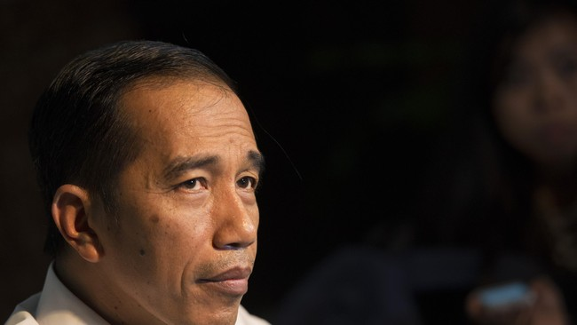

NasDem Beber Alasan Surya Paloh Tak Ikut Pertemuan di Rumah Prabowo
Purwakarta, AboutNEWS -- Wakil Ketua Umum Partai NasDem Saan Mustopa menegaskan hubungan Ketua Umum Partai NasDem Surya Paloh dengan Presiden Prabowo Subianto tetap hangat, walaupun Surya tidak hadir dalam pertemuan para ketua partai politik di kediaman Prabowo pada Sabtu (28/12). Dia mengatakan Surya Paloh berhalangan hadir karena sedang di luar negeri sejak beberapa waktu lalu. Kehadirannya diwakili Ketua Fraksi Partai NasDem DPR RI Viktor Laiskodat.Purwakarta, AboutNEWS -- Wakil Ketua Umum Partai NasDem Saan Mustopa menegaskan hubungan Ketua Umum Partai NasDem Surya Paloh dengan Presiden Prabowo Subianto tetap hangat, walaupun Surya tidak hadir dalam pertemuan para ketua partai politik di kediaman Prabowo pada Sabtu (28/12).
Dia mengatakan Surya Paloh berhalangan hadir karena sedang di luar negeri sejak beberapa waktu lalu. Kehadirannya diwakili Ketua Fraksi Partai NasDem DPR RI Viktor Laiskodat.Namun, sejauh ini Saan mengaku belum mendapatkan informasi terkait topik yang dibicarakan dalam pertemuan para ketua umum partai politik koalisi pemerintahan tersebut. "Itu kan reguler, Pak Prabowo memang Presiden, memang berkeinginan untuk melakukan pertemuan antarketum partai secara reguler," katanya. Menurut ia, pertemuan itu biasanya membicarakan berbagai persoalan dan kebijakan yang akan diambil, salah satunya terkait Natal dan Tahun Baru. Beberapa waktu lalu pun pertemuan antara para ketua umum partai politik dilakukan di Istana. "Jadi, untuk komunikasi dan sebagainya, saling memperkuatlah. Kan, semua partai berkomitmen untuk memperkuat dan memberikan dukungannya kepada pemerintahan Pak Prabowo. Nah, makanya penting pertemuan secara reguler," kata Wakil Ketua DPR RI itu. Presiden Prabowo yang juga Ketua Umum DPP Partai Gerindra mengumpulkan ketua umum partai-partai pendukung pemerintah di kediaman pribadinya Jalan Kertanegara Nomor 4, Jakarta, Sabtu kemarin. Pertemuan itu berlangsung tertutup selama sekitar dua jam. Namun, jajaran ketua umum partai pendukung itu enggan buka suara terkait isi pertemuan, bahkan langsung meninggalkan kediaman Prabowo selepas acara. Jajaran ketua umum partai yang datang, yaitu Ketua Umum Partai Golkar Bahlil Lahadalia, Ketua Umum Partai Amanat Nasional (PAN) Zulkifli Hasan, Ketua Umum Partai Demokrat Agus Harimurti Yudhoyono, Ketua Umum Partai Kebangkitan Bangsa (PKB) Muhaimin Iskandar, dan Presiden PKS Ahmad Syaikhu. Adapula Ketua Fraksi Partai NasDem DPR RI Viktor Laiskodat, Ketua Harian Partai Gerindra Sufmi Dasco Ahmad, dan Sekretaris Jenderal Partai Gerindra Ahmad Muzani.